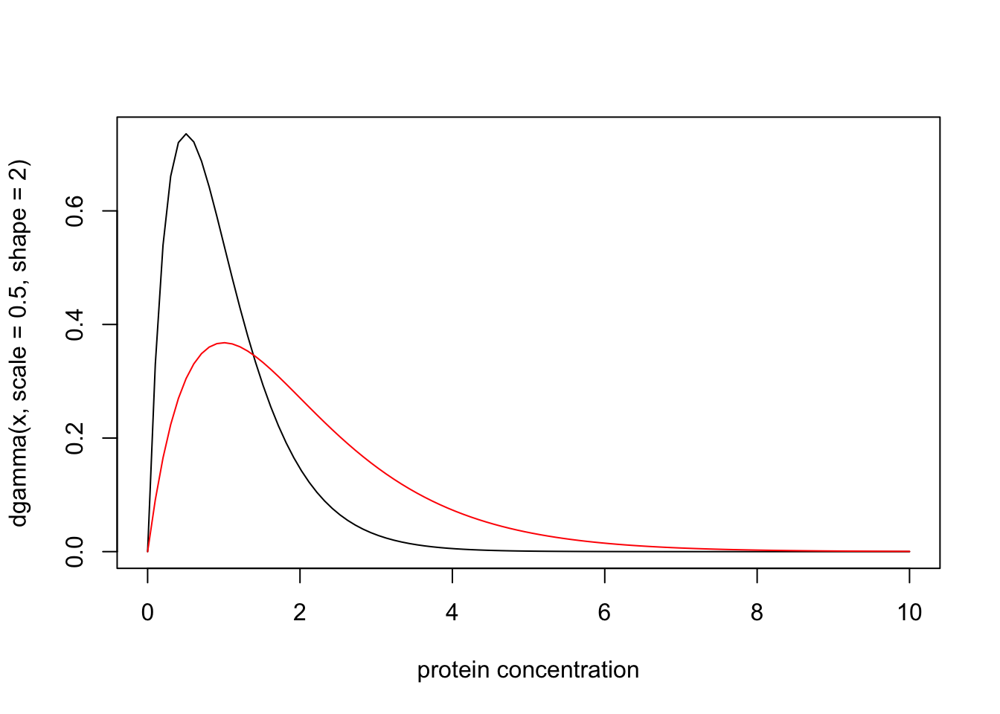

Last updated: 2016-01-11
Code version: 6c7d0e0a1ba46fa42ce678adf929d3a5eda792bd
This document introduces the likelihood ratio for continuous data and models, and explains its connection with discrete models.
Be familiar with the likelihood ratio for discrete data
Recall that if models M0 and M1 are fully-specified model for discrete data X = x, with probability mass functions p(⋅|M0) and p(⋅|M1, then the likelihood ratio for M1 vs M0 is defined as
LR(M1, M0):=p(x|M1)/p(x|M0).
Now suppose that the data and models are continuous. So instead of a probability mass function, each model has a probability density function. Then the likelihood ratio for M1 vs M0 is usually defined as the ratio of the probability density functions. That is, we have exactly the same expression for the LR,
LR(M1, M0):=p(x|M1)/p(x|M0)
but now p(⋅|M1) and p(⋅|M0) are probability density functions instead of probability mass functions.
A medical screening test for a disease involves measuring the concentration (X) of a protein in the blood. In normal individuals X has a Gamma distribution with mean 1 and shape 2. In diseased individuals the protein becomes elevated, and X has a Gamma distribution with mean 2 and shape 2. Plotting the probability density functions of these distributions yields:
x = seq(0,10,length=100)
plot(x, dgamma(x,scale = 0.5,shape = 2), type="l", xlab="protein concentration")
lines(x, dgamma(x,scale = 1,shape = 2), type="l", col="red")
Suppose that for a particular patient we observe X = 4.02. Then the likelihood ratio for the model that this patient is from the normal group (Mn) vs the model that the patient is from the diseased group (Md) is dgamma(4.02,scale=0.5,shape=2)/dgamma(4.02,scale=1,shape=2) which is 0.0718. That is, the data favour this individual being diseased by a factor of approximately 14.
Often the likelihood ratio for continuous models is simply defined as the ratio of the densities, as above. However, an alternative approach, which can yield greater insight, is instead to derive this result as an approximation, from the definition of likelihood ratio for discrete models, as follows.
The first step is to recognize that in practice all observations are actually discrete, because of finite precision. Sometimes the measurement precision is made explicit, but often it is implicit in the number of decimal places used to report an observation. For example, in the example above, where we were told that we observed a protein concentration of X = 4.02, it would be reasonable to think that the measurement precision is 2 decimal places, and that this observation actually corresponds to “X lies in the interval [4.015, 4.025)”. The probability of this observation, under a continuous model for X, is the integral of the probability density function from 4.015 to 4.025. In other words, it isFX(4.025)−FX(4.015) where FX denotes the cumulative distribution function for X.
With this view, the likelihood for the “observation” X = 4.02 under Mn is actually pgamma(4.025,scale=0.5,shape=2)-pgamma(4.015,scale=0.5,shape=2) = 5.1827928\times 10^{-5}. Similarly, the likelihood under Md is 7.217107\times 10^{-4}, and the likelihood ratio is 0.0718126.
As you can see, this approach yields a LR that is numerically very close to that obtained using the ratio of the densities, as above. This is not a coincidence! Here is why we should expect this to happen more generally. Suppose we assume that measurement precision is ϵ. So the “observation” X = x really means X ∈ [x − ϵ, x + ϵ]. Then the likelihood for a model M, given this observation, is Pr(X ∈ [x − ϵ, x + ϵ]|M). Provided ϵ is small, and assuming that the density p(x|M) is well-behaved (e.g. continuous, and not infinite) in the region around x, then this probability is approximately 2ϵp(x|M). Thus the LR for two models M1 vs M0, is given by
LR = Pr(X ∈ [x − ϵ, x + ϵ]|M1)/Pr(X ∈ [x − ϵ, x + ϵ]|M0)≈2ϵp(x|M1)/2ϵp(x|M0)=p(x|M1)/p(x|M0).
In most cases, the Likelihood ratio for model M1 vs model M0 for a continuous random variable X, given an observation X = x, can we well approximated by the ratio of the model densities of X, evaluated at x. This approximation comes from assuming that measurement precision is high and that the model density functions are well behaved near x.
sessionInfo()R version 3.2.3 (2015-12-10)
Platform: x86_64-apple-darwin13.4.0 (64-bit)
Running under: OS X 10.11.2 (El Capitan)
locale:
[1] en_US.UTF-8/en_US.UTF-8/en_US.UTF-8/C/en_US.UTF-8/en_US.UTF-8
attached base packages:
[1] stats graphics grDevices utils datasets methods base
other attached packages:
[1] knitr_1.11
loaded via a namespace (and not attached):
[1] magrittr_1.5 formatR_1.2.1 tools_3.2.3 htmltools_0.2.6
[5] yaml_2.1.13 stringi_1.0-1 rmarkdown_0.8.1 stringr_1.0.0
[9] digest_0.6.8 evaluate_0.8